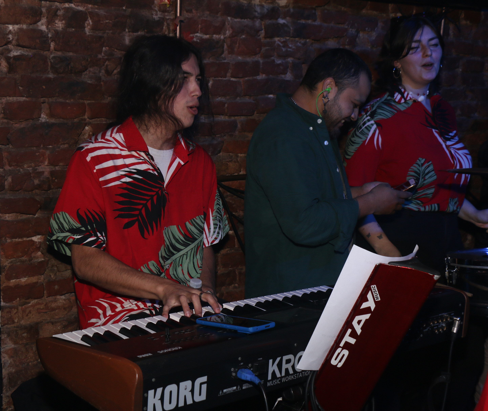
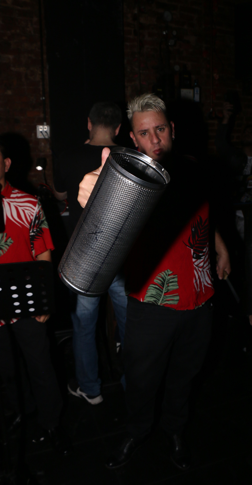
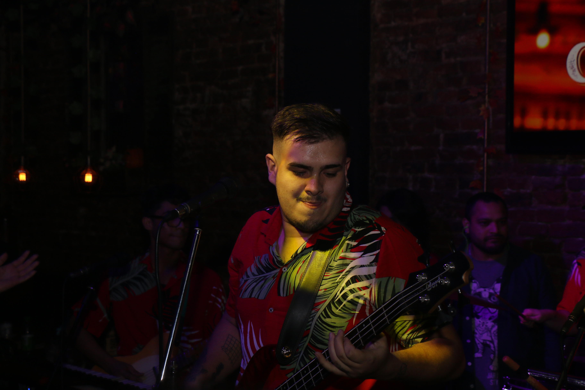
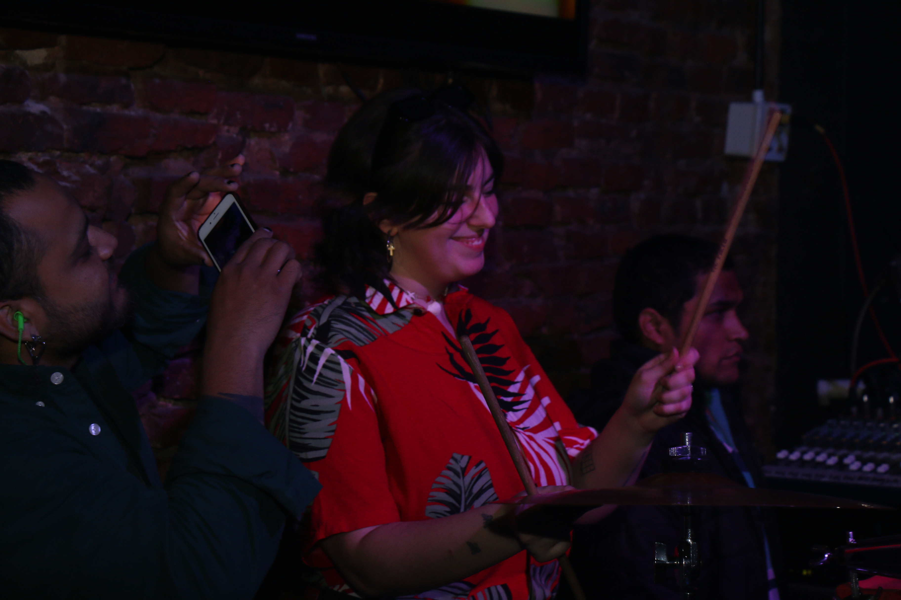
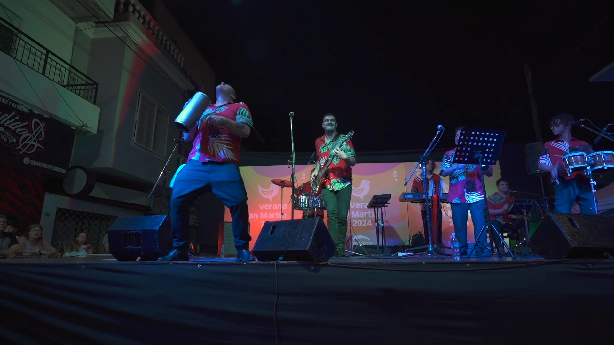
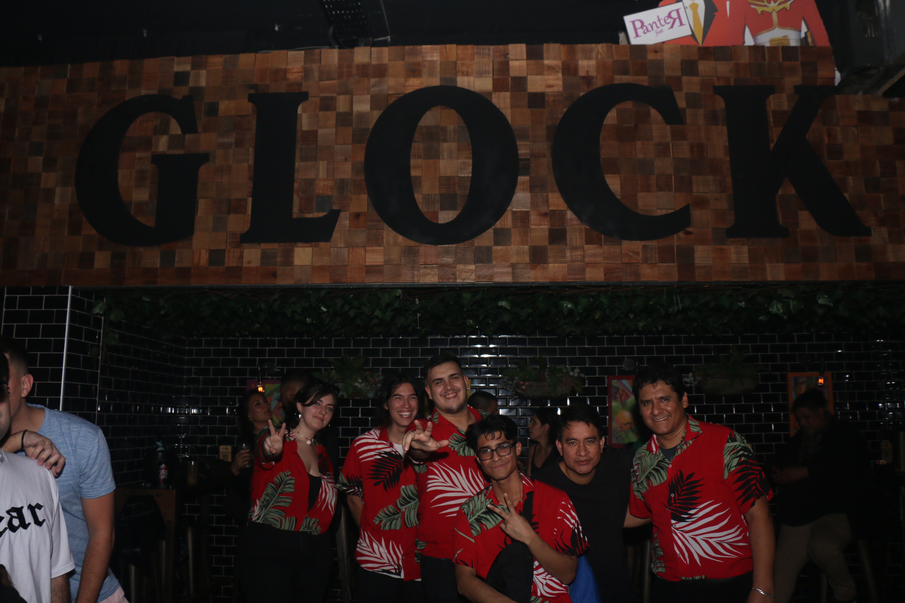

Biografía
Los Cokitos es una banda de música tropical creada en San Martín, Buenos Aires, en Septiembre de 2022. Tienen como género principal la cumbia y el cuarteto argentino.
En un espacio limitado, lograron llenar la escuela, compartiendo y haciendo bailar a todo el que ocupaba el espacio.
Al poco tiempo decidieron ir por algo más grande, lanzando su primera fecha en El Club de la Música(Ballester), el cual lograron hacer un sold out de 110 entradas, haciendo de su primera fecha a modo de concierto, un rotundo éxito.
Es entonces cuando decidieron tocar mensualmente, y, lanzar su propia música.
Inicios
La banda empezo solo para tocar en eventos privados, al ver el rotundo éxito y contento de la gente que estaba generando, decidieron abrirse a shows públicos, dando como resultado su primer show en Esmubi(San Martín).En un espacio limitado, lograron llenar la escuela, compartiendo y haciendo bailar a todo el que ocupaba el espacio.
Al poco tiempo decidieron ir por algo más grande, lanzando su primera fecha en El Club de la Música(Ballester), el cual lograron hacer un sold out de 110 entradas, haciendo de su primera fecha a modo de concierto, un rotundo éxito.
Es entonces cuando decidieron tocar mensualmente, y, lanzar su propia música.
Un Nuevo éxito
Luego de llenar distintos espacios públicos, anunciaron el lanzamiento de su primer sencillo para Agosto de 2023. Éste primer sencillo, de composición original de la banda, se titularía "nena, nena, nena". Así es como el 18 de Agosto de 2023 hicieron un show de lanzamiento para el nuevo single, que logró ser un rotundo éxito, con mas de 50mil reproducciones, lograron llegar al corazón de su público, sonando en distintos países además de Argentina, como Venezuela y Perú.Actualidad
Luego del primer sencillo, Los Cokitos empezaron a sonar en distintos festivales locales y fiestas/bailes de cumbia de la zona. Su segundo tema "Contigo" Logró combinar la cumbia con la salsa y el rock, dando rumbo a su nuevo álbum: Malibu, Que busca reinventar la cumbia, mezclando la cumbia con distintos géneros tropicales del mundo, como bachata, salsa, cuarteto, entre otros. Actualmente, "Malibu" se encuentra en producción, y la banda se encuentra preparándose para los nuevos destinos que se anunciarán en estas semanas.


Integrantes
La banda forma con:
matias garcia - guitarra y voz
Agustin Basualdo - bajo y voz
carlos garcia - octapad
miguel tufinnio - voz principal
franco oyoque - guiro
leo rodriguez - timbal





